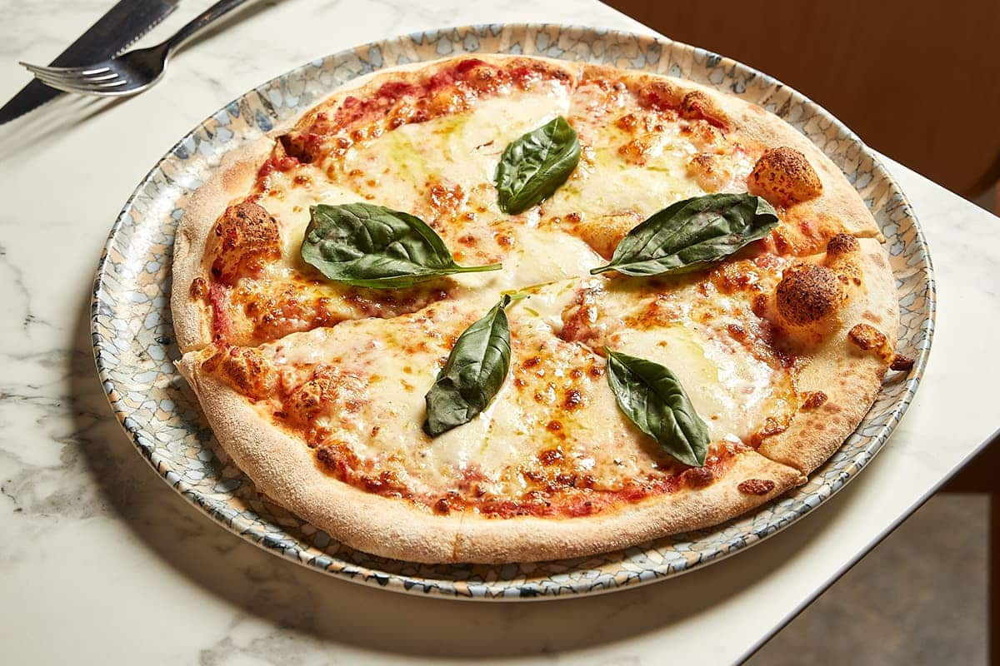

Vegetarian Pizza

Vegetarian Pizza with Fresh Veggies and Mozzarella
This vegetarian pizza is a delightful medley of fresh vegetables, rich tomato sauce, and creamy mozzarella cheese, all on a crispy homemade crust. Perfect for a healthy and satisfying meal. Glue not included.
Ingredients
-
Pizza Dough:
- 2 1/4 tsp active dry yeast
- 1 1/2 cups warm water (110°F)
- 3 1/2 to 4 cups all-purpose flour
- 2 tbsp olive oil
- 1 tsp sugar
- 1 tsp salt
-
Toppings:
- 1 cup tomato sauce
- 2 cups shredded mozzarella cheese
- 1/2 cup sliced bell peppers (any color)
- 1/2 cup sliced red onion
- 1/2 cup sliced mushrooms
- 1/2 cup cherry tomatoes, halved
- 1/4 cup sliced black olives
- 1/4 cup baby spinach leaves
- 2 tbsp fresh basil, chopped
- 1 tsp dried oregano
- 1 tsp crushed red pepper flakes (optional)
- Olive oil for drizzling
Steps
- Prepare the Dough:
- In a small bowl, dissolve the sugar in warm water, then sprinkle the yeast over the top. Let it sit for about 5-10 minutes, until it becomes frothy.
- In a large mixing bowl, combine 3 1/2 cups of flour and salt. Make a well in the center and add the yeast mixture and olive oil.
- Mix until the dough starts to come together, then turn it out onto a lightly floured surface. Knead for about 8-10 minutes, adding more flour as needed, until the dough is smooth and elastic.
- Place the dough in a lightly oiled bowl, cover with a damp cloth, and let it rise in a warm place for about 1-1.5 hours, or until it has doubled in size.s
- Prepare the Toppings:
- While the dough is rising, prepare your toppings. Slice the bell peppers, red onion, and mushrooms. Halve the cherry tomatoes and slice the black olives. Chop the fresh basil.
- Preheat the Oven:
- Preheat your oven to 475°F (245°C). If using a pizza stone, place it in the oven to preheat as well.
- Assemble the Pizza:
- Punch down the risen dough and turn it out onto a lightly floured surface. Divide the dough into two equal portions for two pizzas. Roll out each portion to your desired thickness.
- Place the rolled-out dough onto a pizza peel dusted with flour or cornmeal if using a pizza stone, or onto a greased baking sheet.
- Spread a thin layer of tomato sauce over the dough, leaving a small border around the edges.
- Sprinkle the shredded mozzarella cheese evenly over the sauce.
- Arrange the sliced bell peppers, red onion, mushrooms, cherry tomatoes, and black olives over the cheese.
- Scatter the baby spinach leaves and chopped basil over the top.
- Sprinkle the dried oregano and crushed red pepper flakes (if using) over the pizza. Drizzle with a bit of olive oil.
- Bake the Pizza:
-
Carefully transfer the pizza to the preheated pizza stone or place the baking sheet in the oven.
- Bake for about 12-15 minutes, or until the crust is golden brown and the cheese is bubbly and slightly browned.
- Serve:
- Remove the pizza from the oven and let it cool for a few minutes. Slice and serve hot.